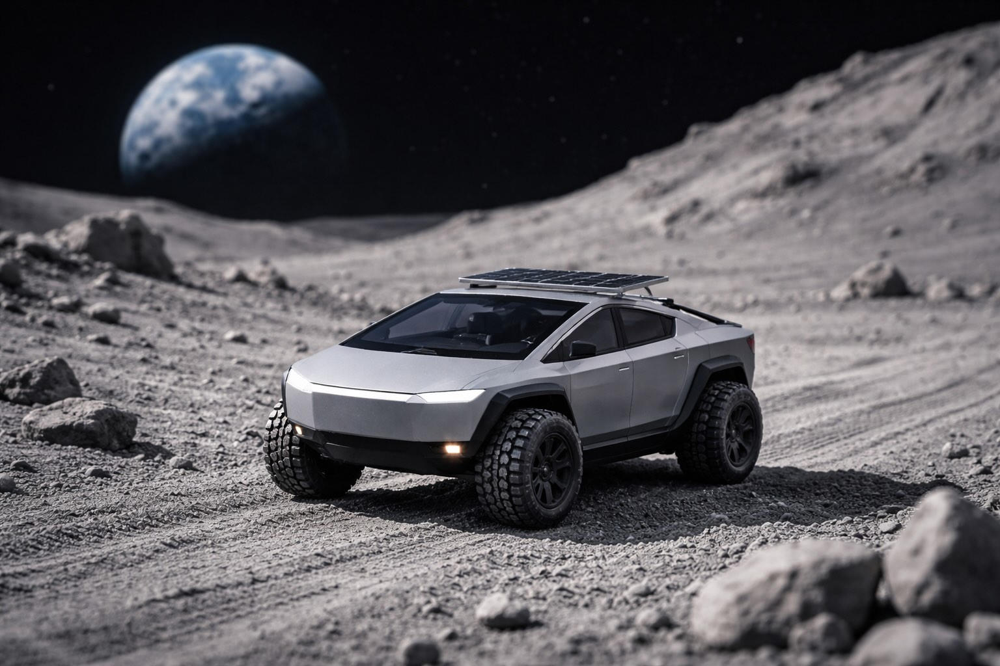

What if you could climb into a vehicle here on Earth, press the accelerator, and feel the quiet thrill of rolling across the Moon?
Picture this: a fleet of tiny, solar-powered lunar rovers — each barely a foot long — waiting in sunlight near a landing zone. Hundreds of them, cached in neat rows, ready to wake at the touch of a subscriber’s command. On Earth, subscribers step into a paired cockpit — perhaps a modified electric pickup or a stationary, game-like driving pod — whose “windows” are actually immersive displays streaming live views from cameras mounted on the rover’s front, rear, and flanks. Turn the wheel on Earth; 1.3 seconds later, the rover turns on the Moon. Another 1.3 seconds and the driver sees the result. The delay is real — about 2.6 seconds round trip — but manageable. It’s not fantasy. It’s physics.
We already know the fundamentals work. Space agencies like NASA have remotely operated robotic explorers for decades. The Moon is only about 1.3 light-seconds away, far closer than Mars. Teleoperation at that distance feels like a slightly laggy video game — entirely feasible with smart control software that smooths steering and prevents tip-overs. Add panoramic cameras, robust compression, and a high-bandwidth link via ground stations (and relay satellites if needed), and you have true lunar telepresence.
Now imagine the design language. The Moon rovers could resemble tiny versions of the angular pickup that redefined electric trucks, inspired by the Tesla Cybertruck. On Earth, subscribers might sit inside a matching vehicle shell — or a dedicated console styled like one — creating a sense of pairing between terrestrial cockpit and lunar rover. It’s experiential symmetry: a “Cybertruck” on Earth guiding its miniature twin across regolith under a black sky.
The business model writes itself. Subscribers book a one-hour session — perhaps for a few thousand dollars at first, falling over time as launch and communications costs decline. Corporate sponsors underwrite exploration zones. Schools reserve time slots for students to conduct real lunar field trips. Artists choreograph rover ballets at sunrise along the terminator line. Scientists crowdsource terrain mapping. A global audience gathers for live events: crater sprints, regolith rallies, slow-motion lunar jumps in one-sixth gravity.
Technically, the challenges are substantial but solvable. The rovers must survive vacuum, radiation, and wild temperature swings. Dust mitigation is critical. Solar panels and efficient batteries keep them operating through long lunar days. Onboard autonomy prevents dangerous maneuvers during signal delay. Communications infrastructure ensures stable video streams. None of this violates known physics; it’s engineering, logistics, and capital.
And capital may be the most interesting piece. A partnership between Tesla, Inc. and SpaceX would feel almost inevitable: launch capability meets electric design and software prowess. The narrative is powerful — not just tourism, but democratized exploration. A new kind of mobility company that spans worlds.
There’s poetry in it. For centuries, the Moon has been a distant mirror. With telepresence, it becomes terrain — textured, navigable, participatory. You won’t just look at the Moon; you’ll leave tracks there. You’ll steer around a rock and feel, seconds later, the confirmation of motion on another world. The experience would be neither purely virtual nor fully physical, but something new: embodied presence at a cosmic remove.
Drive the Moon. Not as an astronaut. As yourself.